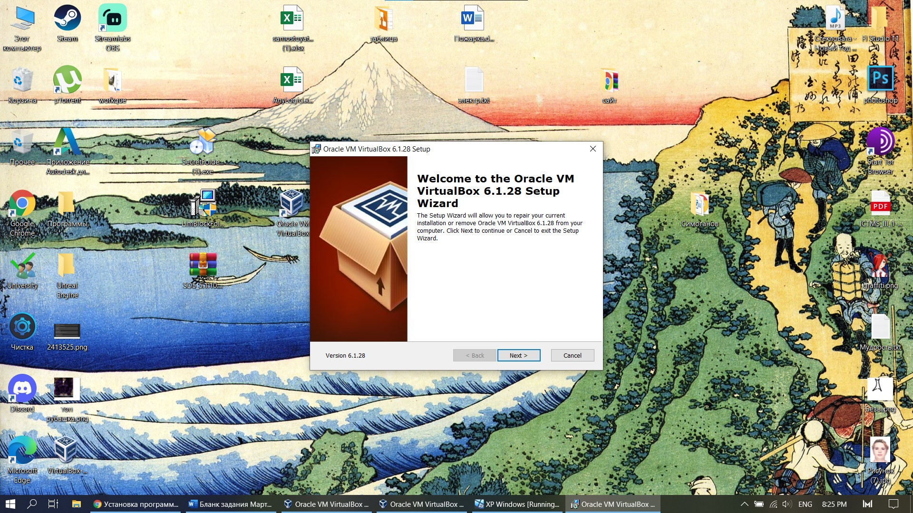
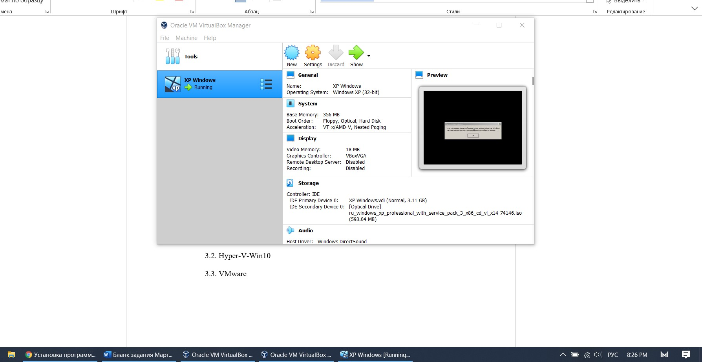
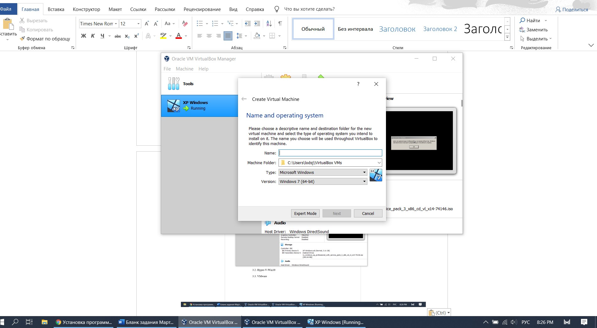
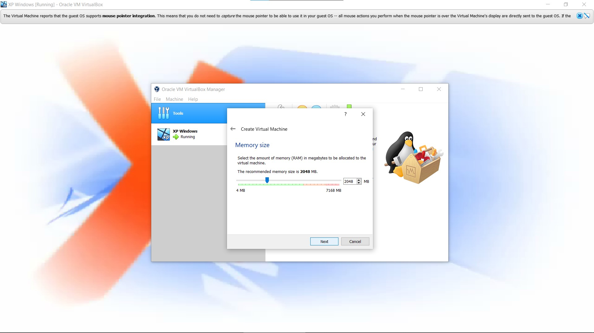
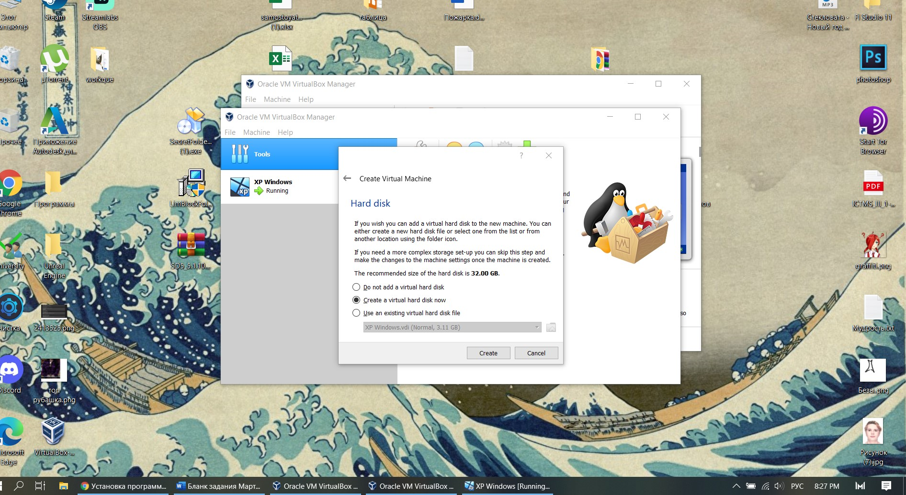
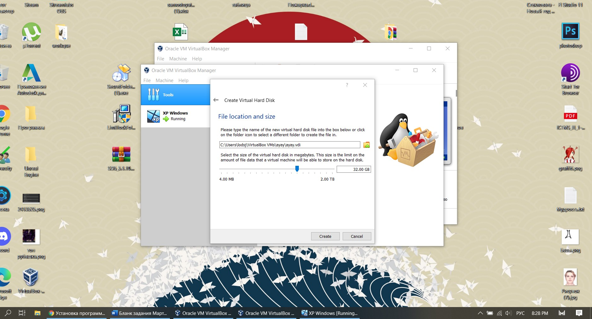
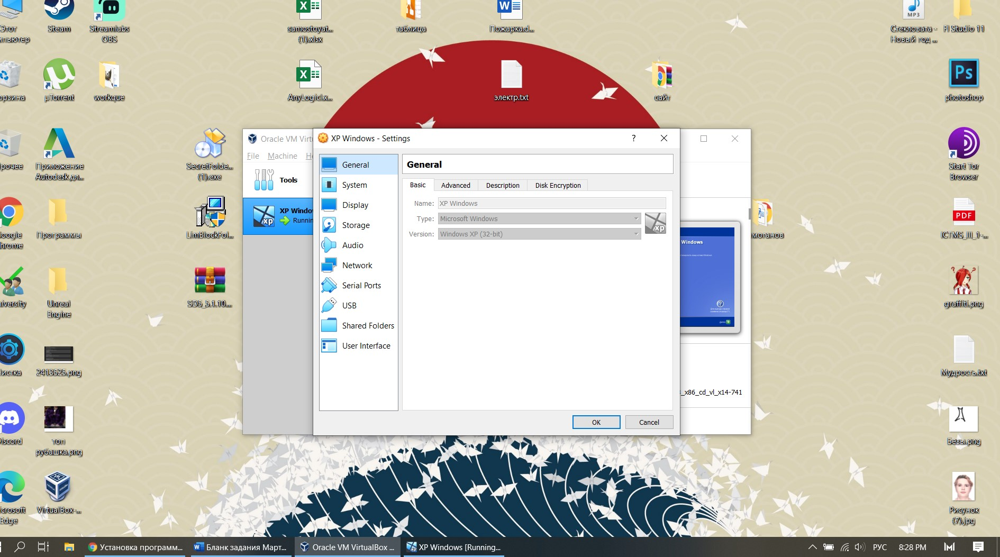

Oracle VirtualBox |
| Oracle VM VirtualBox — специальная программа, дающая возможность запустить на вашем компьютере виртуально другие операционные системы. С её помощью можно виртуализировать разные версии Windows, также доступна работа с FreeBSD, Linux, ReactOS, Solaris/OpenSolaris, Mac OS X, DOS. |
| Установка программы проходила в 3 этапа: лицензионное соглашение, выбор места для инсталляции, установка дополнений для программы. |
|  |
| Рис. 1 Установка программы |
| VirtualBox имеет удобный понятный интерфейс. В интерфейсе всего 4 кнопки: создание новой машины, настройки машины удаление и запуск. |
|  |
| Рис. 2 Начальный экран |
| Чтобы начать создавать машину – нажимаем на синюю кнопку создания машины. Мы выбираем название нашей машины, ее месторасположение, тип системы (версия windows, Linux, dos). |
|  |
| Рис. 3 Создание машины |
| После выбора системы – выбирается кол-во оперативной памяти. Далее выбирается уже имеющееся пространство для хранения файлов на ssd или создание нового выделенного пространства. И после выбора диска – выделение кол-ва места. |
|  |
| Рис. 4 Выбор оперативнной памяти |
|  |
| Рис. 5 Создание диска |
|  |
| Рис. 6 Выбор кол-ва памяти диска |
| Настройки машины состоят из выбора образа системы из памяти ПК, выбора кол-ва ядер процессора. Также можно выбрать дисплей на котором будет появлятся машина. Есть вкладка USB – тут можно дополнительно установить софт для подключения usb устройств к машине. И, наконец, создание общей папки. Она позволяет выделить папку через которую будет происходить сообщение файлами между основной системой и виртуальной. |
|  |
| Рис. 7 Настройки системы |
| Вывод: Машина имеет удобный интерфейс для пользователя, но без сторонних источников сложно разобраться с установкой образа ОС. Имеет расширенный функционал, но для полноценной работы машины – необходимо установить некоторые дополнения для программы. Единственная проблема – плохая оптимизированность работы виртуальной машины. |